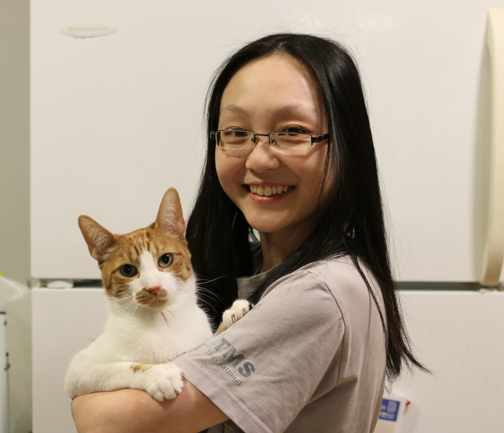

About Me
Hi! Nice to meet you, I'm Karen. A little bit about myself; I am a parent to two cats, Oscar and Rosie. When I was younger I played table tennis and swam competitively. I like to draw and have gotten a lot more serious about it in the past few years. I have done some freelance commissions as well as started my own Etsy shop. I would love to make a career out of my passions.
While I did graduate from the programming course here at Algonquin, I found that it didn't suit my creative interests. Funnily enough I still find myself here in this Web dev class. That being said, I don't believe the Computer Programming program placed a large focus on web dev and design, so I look forward to getting the most I can out of these classes. IMD looked like a good balance between my interests and practical/technical skills which is why I am currently here in the program. This would be my 2nd program here at the college.